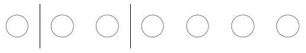

Theorem2.7.2
Assume \(n\) pirates want to distribute \(k\) gold pieces among themselves (for some \(k\geq n\)) such that everybody gets at least one gold piece. They can do this in \(\binom{k-1}{n-1}\)-many ways.
Three pirates (Anne Bonney, Black Bellamy and Calico Jack) raid a small ship. They take all the treasure they can find, which is seven gold pieces altogether. Afterwards, they would like to distribute the loot among themselves. They only have one rule: since everybody was useful during the raid, everyone should receive at least 1 gold piece. How many ways can they distribute the seven gold pieces? Gold pieces are identical, it does not matter who gets which gold piece. It only matters how many gold pieces each pirate gets.
One way to solve this problem is of course to write down all possible distributions. Let us list the possibilities by considering the amount of gold pieces received by the highest rewarded pirate. If everyone needs to get at least one gold piece, then nobody can have more than five gold pieces. In fact, if somebody gets five gold pieces, then the other two will have two gold pieces to distribute, which they can only do by giving one gold piece to each of them. This is three possibilities (depending on who receives the five gold pieces). If the pirate in the highest regard gets four gold pieces, then the other two pirates will have three gold pieces to distribute. They can only distribute it as two-one. This altogether amounts to 6 possibilities: 3 possibilities on who gets four gold pieces, then in each case 2 possibilities on who gets two gold pieces, that is, \(3 \cdot 2\) possibilities. (Note that this is the number of permutations of the three pirates.) Finally, if the highest reward is three gold pieces, then the other two pirates can distribute the remaining four gold pieces in two different ways: either one of them gets three gold pieces, and the other gets one, or both get two gold pieces. Both distributions amount to 3 possibilities altogether. In the first case there are 3 possibilities to choose who gets one gold piece (and the other two gets three gold pieces each). In the second case there are 3 possibilities to choose who gets three gold pieces (and the other two gets two gold pieces each). Table 2.7.1 summarizes the 15 possible distributions.
| Anne Bonney | Black Bellamy | Calico Jack |
| 5 | 1 | 1 |
| 1 | 5 | 1 |
| 1 | 1 | 5 |
| 4 | 2 | 1 |
| 4 | 1 | 2 |
| 2 | 4 | 1 |
| 1 | 4 | 2 |
| 2 | 1 | 4 |
| 1 | 2 | 4 |
| 3 | 3 | 1 |
| 3 | 1 | 3 |
| 1 | 3 | 3 |
| 3 | 2 | 2 |
| 2 | 3 | 2 |
| 2 | 2 | 3 |
This is all well and good, but if next time the pirates raid a much bigger ship and find a treasure chest full of gold on board, we will have a much harder time counting the possibilities for them to distribute the gold. It would be nice to obtain the final answer by some combinatorial reasoning, which we can apply for different number of gold pieces (or different number of pirates). We give such a method in the following.
Imagine that the pirates put the gold pieces in a line, like this: Now, they want to divide it into three parts: a leftmost part, a middle part and a rightmost part. The leftmost part will go to Anne Bonney, the middle part is for Black Bellamy, and Calico Jack takes the rightmost part. For example if Anne Bonney gets one gold piece, Black Bellamy gets two gold pieces, and Calico Jack takes four, then they divide the seven gold pieces like this:  That is, they use two sticks to divide the seven gold pieces into three parts. What is left from the first stick is for Anne Bonney, what is between the two sticks is for Black Bellamy, and everything right from the second stick is taken by Calico Jack. Where can they put the sticks? They can put the sticks between gold pieces. They cannot put a stick before the first gold piece, because then Anne Bonney would not get any gold pieces. Similarly, they cannot put a stick after the last gold piece, because Calico Jack needs to receive at least one gold piece. Finally, they cannot put the two sticks between the same two gold pieces, because Black Bellamy needs to get at least one gold piece. Thus, they need to put the two sticks somewhere in the spaces between the gold pieces, but they cannot put the two sticks between the same two gold pieces. That is, they need to find which two places they put sticks to. There are 6 places between the seven gold pieces, and they need to find two, where they put the two sticks. This can be done in \(\binom{6}{2}=\frac{6\cdot 5}{2}=15\)-many ways. This combinatorial argument works in general, when we need to distribute \(k\) gold pieces among \(n\) pirates. In general, \(n\) pirates would need \(n-1\) sticks to divide the gold pieces to \(n\) parts, and there will be \(k-1\) places between \(k\) gold pieces. Thus we obtain
Assume \(n\) pirates want to distribute \(k\) gold pieces among themselves (for some \(k\geq n\)) such that everybody gets at least one gold piece. They can do this in \(\binom{k-1}{n-1}\)-many ways.
Prove Theorem 2.7.2 precisely.
After having found that they have 15 possible ways to distribute seven gold pieces among themselves, the three pirates divide the gold pieces in some way and continue sailing the oceans. Next, they encounter a somewhat bigger ship than last time, and they find a treasure chest with 10 gold pieces in it. All of them needed to do quite a bit of work for getting the treasure chest (lot of sword-fighting for all three of them), therefore this time they want to distribute the money so that everyone receives at least two gold pieces. How many ways can they distribute the money now?
Again, we can solve this problem by writing down all possible distributions, like before. As before, let us list the possibilities by considering the amount of gold pieces received by the highest rewarded pirate. If everyone needs to get at least two gold pieces, then nobody can have more than six gold pieces. In fact, if somebody gets six gold pieces, then the other two will have four gold pieces to distribute, which they can only do by giving two gold pieces to each of them. This is three possibilities (depending on who receives the six gold pieces). If the pirate in the highest regard gets five gold pieces, then the other two pirates will have five gold pieces to distribute. They can only distribute it as three-two. This altogether amounts to 6 possibilities: 3 possibilities on who gets five gold pieces, then in each case 2 possibilities on who gets three gold pieces, that is, \(3 \cdot 2\) possibilities. Finally, if the highest reward is four gold pieces, then the other two pirates can distribute the remaining six gold pieces in two different ways: either one of them gets four gold pieces, and the other gets two, or both get three gold pieces. Both distributions amounts to 3 possibilities altogether. In the first case there are 3 possibilities to choose who gets two gold pieces (and the other two gets four gold pieces each). In the second case there are 3 possibilities to choose who gets four gold pieces (and the other two gets three gold pieces each). Table 2.7.4 summarizes the 15 possible distributions.
| Anne Bonney | 6 | 2 | 2 | 5 | 5 | 3 | 2 | 3 | 2 | 4 | 4 | 2 | 4 | 3 | 3 |
| Black Bellamy | 2 | 6 | 2 | 3 | 2 | 5 | 5 | 2 | 3 | 4 | 2 | 4 | 3 | 4 | 3 |
| Calico Jack | 2 | 2 | 6 | 2 | 3 | 2 | 3 | 5 | 5 | 2 | 4 | 4 | 3 | 3 | 4 |
Here, we received exactly the same number of distributions as for the earlier case, when the three pirates needed to distribute 7 gold pieces, and everybody needed to get at least one. This can hardly be a coincidence. Somehow, we should be able to reduce the new problem to the earlier problem. The main difference is that now every pirate needs to get at least two gold pieces instead of one. This can be easily remedied: everyone takes one gold piece at the very beginning. Then seven gold pieces remain (\(10-3\)), and everyone needs to get at least one more. And this is now exactly the same problem as before. Again, the argument works in general: if there are \(n\) pirates and \(k\) gold pieces, and everybody needs to get at least two gold pieces, then first every pirate takes one gold piece. This way, everyone needs to get one more gold piece, and they will have \(k-n\) gold pieces to distribute further. Applying Theorem 2.7.2 we can prove
Assume \(n\) pirates want to distribute \(k\) gold pieces among themselves (for some \(k\geq 2n\)) such that everybody gets at least two gold pieces. They can do this in \(\binom{k-n-1}{n-1}\)-many ways.
Prove Proposition 2.7.5 precisely.
The three pirates continued to raid ships. Next time they found a small boat with a fisherman and only four gold pieces. They, again, want to distribute these gold pieces among themselves. But this time they do not want to impose any conditions on the distributions. It may be possible that somebody does not receive any gold pieces, even that somebody takes all the gold. How many ways can they distribute the four gold pieces among themselves?
After the previous two exercises, it is not too difficult to find all the possibilities. There are three possibilities corresponding to the distribution where one of them gets all four gold pieces (three possibilities depending on who gets all the gold). If one of them gets three gold pieces, then the remaining one gold piece goes to one of the remaining pirates. There are 6 such possibilities: 3 choices on who gets three gold pieces, and for each choice there are 2 choices on who of the remaining two pirates gets 1 gold piece (and the last pirate does not get any gold pieces). If the highest rewarded pirate gets two gold pieces, then the remaining two gold pieces can be distributed among the two remaining pirates in two different ways: in the first case one of them gets both gold pieces, and the other gets none, in the second case both of the remaining pirates gets one gold piece each. In the first case they have 3 choices on who gets no gold pieces (and the other two pirates get two gold pieces each), in the second case they have 3 choices on who gets two gold pieces (and the other two pirates get one gold piece each). Table 2.7.7 summarizes all 15 possibilities for distributing four gold pieces among the three pirates.
| Anne Bonney | 4 | 0 | 0 | 3 | 3 | 1 | 0 | 1 | 0 | 2 | 2 | 0 | 2 | 1 | 1 |
| Black Bellamy | 0 | 4 | 0 | 1 | 0 | 3 | 3 | 0 | 1 | 2 | 0 | 2 | 1 | 2 | 1 |
| Calico Jack | 0 | 0 | 4 | 0 | 1 | 0 | 1 | 3 | 3 | 0 | 2 | 2 | 1 | 1 | 2 |
Again, by applying some easy trick we can find the connection between this distribution problem and the first one (where each pirate wanted to get at least one gold piece from the loot). Let us try to reduce this problem to the other one. The only difference is that with the first distribution problem every pirate needed to get at least one gold piece, and now there is no such condition. Let us create a situation where this condition arises naturally! For example, if every pirate puts one gold piece from their own pocket to the treasure chest. Then there would be 7 gold pieces in the treasure chest, but every pirate would want to get at least one gold piece (they would want to get back at least what they put in). This is exactly the same distribution problem as the first was, and thus they must have the same answer, as well.
This argument can be applied in general:
There are \(\binom{n+k-1}{n-1} = \binom{n+k-1}{k}\)-many ways for \(n\) pirates to distribute \(k\) gold pieces among themselves.
Let every pirate put one gold piece into the pile of \(k\) gold pieces. This way there will be \(n+k\) gold pieces to distribute among themselves, but now each pirate would need to get at least one gold piece (because they want to get back at least the one gold piece they put into the pile). They can distribute \(n+k\) gold pieces among themselves with that condition in \(\binom{n+k-1}{n-1}\)-many ways by Theorem 2.7.2. Finally, by the symmetric property of the binomial coefficients (Proposition 2.6.7) we have \(\binom{n+k-1}{n-1} = \binom{n+k-1}{k}\text{.}\)
Finally, our three pirates (Anne Bonney, Black Bellamy and Calico Jack) raid yet another ship. This time, they find a treasure chest containing seven gold pieces. But this time, they did not contribute to obtaining the chest equally. Say, Anne Bonney did not fight with anyone on the ship, while Black Bellamy fought with one person, and Calico Jack fought with two! Therefore, they feel it just that from the seven gold pieces Black Bellamy gets at least one, and Calico Jack gets at least two (they do not impose any condition on how much Anne Bonney needs to get). How many ways can they distribute the gold pieces with these conditions?
Once again, we could try to reduce this new problem to one which we solved already. But this time, we will reduce it to Theorem 2.7.8 rather than to Theorem 2.7.2. Just think about it: it makes more sense to the pirates to just give first the conditional money to the people that deserve it. That is, first they pay the one gold piece to Black Bellamy, and two gold pieces to Calico Jack. Then they will have four gold pieces to distribute among the three of them, which can be done in \(\binom{4+3-1}{3-1} = \binom{6}{2} = 15\)-many ways by Theorem 2.7.8.
Write all possibilities where the three pirates distribute seven gold pieces such that Black Bellamy gets at least one gold piece and Calico Jack gets at least two gold pieces.
Applying the same argument, we can now phrase the most general theorem of this topic.
Assume \(n\) pirates want to distribute \(k\) gold pieces among themselves such that the first pirate gets at least \(k_1\) gold pieces, the second pirate gets at least \(k_2\) gold pieces, etc., the \(k\)th pirate gets at least \(k_n\) gold pieces (where \(k\geq k_1 + k_2 + \dots + k_n\)). The number of ways they can do this is
\begin{equation*} \binom{k-k_1-k_2 - \dots - k_n + n-1}{n-1}\text{.} \end{equation*}First, the pirates pay off all the conditional amounts. That is, the first pirate immediately gets \(k_1\) gold pieces, the second pirate gets \(k_2\) gold pieces, etc., the \(k\)th pirate gets \(k_n\) gold pieces. Then they will have \(k-k_1-k_2 - \dots -k_n\) gold pieces left to distribute, on which they have no more conditions. By Theorem 2.7.8 they have \(\binom{k-k_1-k_2 - \dots - k_n + n-1}{n-1}\)-many ways to do the distribution.
We make two remarks here. First, rather than reducing the problem again for the first pirate situation (where everybody gets at least one gold piece), we reduced it to one, which is easier to use. This is quite customary in Mathematics, that when we have proved a hard result, we simply use it for similar situations, rather than trying to figure out a similar proof for each similar case. Second, that the proof works even in the case where some of the \(k_i\)s are negative. That would represent to a situation where the \(i\)th pirate was so lazy, that he actually hindered the raid, and therefore he should pay some amount into the loot they obtained.
How many ways can \(n\) pirates distribute \(k\) gold pieces, if
\(k = 9\text{,}\) \(n=3\text{,}\) and everybody gets at least one gold piece;
\(k = 8\text{,}\) \(n=3\text{;}\)
\(k = 7\text{,}\) \(n=3\text{;}\)
\(k = 11\text{,}\) \(n=3\text{,}\) and everybody gets at least two gold pieces;
\(k = 9\text{,}\) \(n=4\text{,}\) and everybody gets at least one gold piece;
\(k = 7\text{,}\) \(n=4\text{;}\)
\(k = 12\text{,}\) \(n=4\text{,}\) and everybody gets at least two gold pieces;
\(k = 10\text{,}\) \(n=4\text{,}\) and the second pirate gets at least one gold piece, the third pirate gets at least two gold pieces, and the fourth pirate gets at least three gold pieces;
\(k = 15\text{,}\) \(n=4\text{,}\) and the first pirate gets at least one gold piece, the second pirate gets at least two gold pieces, the third pirate gets at least three gold pieces, and the fourth pirate gets at least four gold pieces;
\(k = 15\text{,}\) \(n=5\text{,}\) and the first and third pirates get at least one-one gold piece, and the fourth and fifth pirates get at least three-three gold pieces?
In the last part of this section, we consider equations with integer solutions. Take for example the equation
\begin{equation} x+y+z = 7\text{.}\label{eq_pirate}\tag{2.7.1} \end{equation}We are not interested in all the solutions, we are only interested in the number of positive integer solutions. We can of course list them without any problems. First, we look for solutions \(x \geq y \geq z\text{,}\) then we find all the solutions. Now, \(z\) cannot be bigger than 2, because that would mean \(7 = x+ y + z \geq 3z \geq 3\cdot 3 = 9\) a contradiction. Thus \(z=1\) or \(z=2\text{.}\) If \(z = 2\text{,}\) then \(x\geq y \geq 2\text{,}\) as well. Now, if \(y \geq 3\text{,}\) then \(x \geq 3\text{,}\) and \(7 = x + y + z \geq 2y + z \geq 2\cdot 3 + 2 = 8\) is a contradiction. Thus if \(z=2\) then \(y=2\text{,}\) and then \(x= 3\) from (2.7.1). If \(z=1\text{,}\) then \(y\) cannot be bigger than 3 (then \(x\geq y \geq 4\text{,}\) and thus \(7 = x+y+z \geq 2y + z \geq 2 \cdot 4 + 1 = 9\) a contradiction). If \(y = 3\) then \(x=3\text{,}\) if \(y = 2\) then \(x=4\text{,}\) and if \(y = 1\) then \(x=5\text{.}\) That is, the positive integer solutions of (2.7.1) are
\begin{equation*} (5, 1, 1), (4, 2, 1), (3, 3, 1) \mbox{ and } (3, 2, 2)\text{.} \end{equation*}There are three solutions of type \((5, 1, 1)\) depending on which variable equals to 5. There are six solutions of type \((4, 2, 1)\text{:}\) three choices to determine which variable equals to 4 and then two choices for which of the remaining two variables is 2. There are three solutions of type \((3, 3, 1)\) depending on which variable equals to 1, and there are three solutions of type \((3, 2, 2)\) depending on which variable equals to 3. That is, there are 15 positive integer solutions to (2.7.1). Table 2.7.12 collects all 15 solutions.
| \(x\) | 5 | 1 | 1 | 4 | 4 | 2 | 1 | 2 | 1 | 3 | 3 | 1 | 3 | 2 | 2 |
| \(y\) | 1 | 5 | 1 | 2 | 1 | 4 | 4 | 1 | 2 | 3 | 1 | 3 | 2 | 3 | 2 |
| \(z\) | 1 | 1 | 5 | 1 | 2 | 1 | 2 | 4 | 4 | 1 | 3 | 3 | 2 | 2 | 3 |
Now, these solutions in Table 2.7.12 look exactly the same as the distributions of 7 gold pieces among three pirates such that each of them gets at least one gold piece (see Table 2.7.1). This is not a coincidence. Say, Anne Bonney gets \(x\) gold pieces, Black Bellamy gets \(y\) gold pieces, and Calico Jack gets \(z\) gold pieces. Then altogether they take all 7 gold pieces, that is, \(x+y+z = 7\text{.}\) Moreover, each of them needs to get at least one gold piece, that is, \(x \geq 1\text{,}\) \(y \geq 1\text{,}\) \(z \geq 1\text{.}\) Thus the positive integer solutions of the equation \(x+y+z =7\) correspond to the distributions of 7 gold pieces among three pirates such that each of them gets at least one gold piece. This argument works in the general case, as well.
Consider the equation
\begin{equation} x_1 + x_2 + \dots + x_n = k\text{.}\label{eq_pirates}\tag{2.7.2} \end{equation}The number of integer solutions of (2.7.2) for which \(x_1 \geq k_1\text{,}\) \(x_2 \geq k_2\text{,}\) \(\dots\text{,}\) \(x_n \geq k_n\) is
\begin{equation*} \binom{k-k_1-k_2 - \dots - k_n +n-1}{n-1}\text{.} \end{equation*}The integer solutions of (2.7.2) correspond to gold distribution. Assume there are \(n\) pirates distributing \(k\) gold pieces among themselves such that the first pirate gets at least \(k_1\) gold pieces, the second pirate gets at least \(k_2\) gold pieces, etc. Assume that the first pirate gets \(x_1\) gold pieces, the second pirate gets \(x_2\) gold pieces, etc. Then each distribution of the gold pieces corresponds to an integer solution of (2.7.2), and each integer solution of (2.7.2) corresponds to a distribution. By Theorem 2.7.10 the number of distributions is
\begin{equation*} \binom{k-k_1-k_2 - \dots - k_n +n-1}{n-1}\text{.} \end{equation*}and so is the number of integer solutions of (2.7.2).
How many integer solutions do the following equations have?
\(x + y + z = 9\text{,}\) where \(x\geq 1\text{,}\) \(y\geq 1\text{,}\) \(z \geq 1\text{;}\)
\(x + y + z = 8\text{,}\) where \(x\geq 0\text{,}\) \(y\geq 0\text{,}\) \(z \geq 0\text{;}\)
\(x + y + z = 7\text{,}\) where \(x\geq 0\text{,}\) \(y\geq 0\text{,}\) \(z \geq 0\text{;}\)
\(x + y + z = 11\text{,}\) where \(x\geq 2\text{,}\) \(y\geq 2\text{,}\) \(z \geq 2\text{;}\)
\(w + x + y + z = 9\text{,}\) where \(w \geq 1\text{,}\) \(x\geq 1\text{,}\) \(y\geq 1\text{,}\) \(z \geq 1\text{;}\)
\(w + x + y + z = 7\text{,}\) where \(w \geq 0\text{,}\) \(x\geq 0\text{,}\) \(y\geq 0\text{,}\) \(z \geq 0\text{;}\)
\(w + x + y + z = 12\text{,}\) where \(w \geq 2\text{,}\) \(x\geq 2\text{,}\) \(y\geq 2\text{,}\) \(z \geq 2\text{;}\)
\(w + x + y + z = 10\text{,}\) where \(w \geq 0\text{,}\) \(x\geq 1\text{,}\) \(y\geq 2\text{,}\) \(z \geq 3\text{;}\)
\(w + x + y + z = 15\text{,}\) where \(w \geq 1\text{,}\) \(x\geq 2\text{,}\) \(y\geq 3\text{,}\) \(z \geq 4\text{;}\)
\(v + w + x + y + z = 15\text{,}\) where \(v \geq 1\text{,}\) \(w \geq 0\text{,}\) \(x\geq 1\text{,}\) \(y\geq 3\text{,}\) \(z \geq 3\text{.}\)
Rudolf and her two sisters (Ágnes and Bea) like the famous Hungarian Túró Rudi dessert very much. Their mother gives Rudolf money and tells him to buy 10 pieces of Túró Rudi. She has only one condition: since Ágnes likes the Danone brand, Bea likes the Milli brand, and Rudolf likes the Pöttyös brand, he is supposed to buy at least one from each brand. How many ways can Rudolf buy 10 Túró Rudi desserts this way?